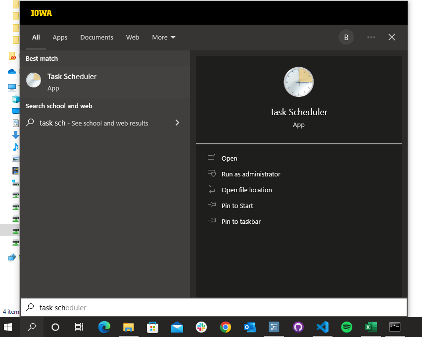

“R will always be arcane to those who do not make a
serious effort to learn it. It is not meant to be intuitive and easy for
casual users to just plunge into. It is far too complex and powerful for
that. But the rewards are great for serious data analysts who put in the
effort.
— Berton
Gunter R-help August 2007
“Evelyn Hall: I would like to know how (if) I can extract some of the
information from the summary of my nlme.
Simon Blomberg: This is R. There is no if. Only
how.”
— Evelyn
Hall and Simon ‘Yoda’ Blomberg, R-help April 2005
Learning
R
Base R
Here are a slew of resources for learning base R (in
addition to the documents in the lab’s Primer
Articles folder ):
Statistics (using
R)
The following are resources for learning statistics using
R.
tidyverse
The following are resources for learning tidyverse,
which is a collection of R packages for data
management:
Questions
If you have questions:
Initial Set Up
Note: many of these initial setup steps described below are not
necessary for general use; many of these steps are necessary only for
using lab-related repositories (e.g., to gain API access to export data
from REDCap, to use absolute paths rather than relative
paths so repos can communicate with each other, etc.).
Make sure you are logged onto a computer that can access the lab
server (either a lab computer, or a computer you can VPN into the lab
server), and that you have admin access to install and uninstall
software
Install R (https://www.r-project.org/ ) into a directory that
contains no spaces; On PC, change the location from the default
C:/Program Files/R/[R-VERSION] (which contains a space) to
C:/R/[R-VERSION] (which
does not contain any spaces —this is because some
packages that require compilation to install cannot read filepaths with
spaces ); may have to right click and “Run As Administrator”
If R was already installed in a directory that contains
spaces (e.g., C:/Program Files/R/[R-VERSION]), uninstall
R before installing it in a directory that doesn’t contain
spaces
Install RStudio Desktop (https://www.rstudio.com/products/rstudio/download/ ) in
the main program files directory; may have to right click and “Run As
Administrator”. RStudio is the best available graphical
user interface for R.
Set the executables for R and RStudio to
always run with administrator permissions.
If on Windows, open File Explorer and find the main executable of
R (C:/R/[R-VERSION]/bin/R.exe) and
RStudio
(C:\Program Files\RStudio\bin\RStudio.exe). Right-click it
to open the contextual menu. Then, click or tap on “Properties”. In the
Properties window, go to the Compatibility tab. At the bottom of the
window, check the box next to the “Run this program as an administrator”
option, and then click or tap on Apply or OK.
Install tools to allow you to compile R packages so you
can install packages from source, if necessary (i.e., if package
binaries are not available):
Set up git, GitLab, and the GitHub Desktop App in the main program
files directory; may have to right click and “Run As Administrator”; For
instructions setting up and using GitLab, see here: https://research-git.uiowa.edu/PetersenLab/R-InitialSetup/-/blob/master/GitLab/GitLab%20Instructions.md
The Rprofile.site file in the etc folder
of the R installation directory is the code that is run for
every user Rprofile.site file with the
lab’s Rprofile.site file so R installs
packages in the correct location, sets the default package repository,
updates packages, and gives you a fortune cookie. To do this, perform
the following steps:
Rename the Rprofile.site file in the R
installation directory
(C:/R/R-[InsertVersionNumber]/etc/Rprofile.site) to be
Rprofile_BACKUP.site
Download the lab’s Rprofile.site file located in this
repository at the following location (https://research-git.uiowa.edu/PetersenLab/R-InitialSetup/-/blob/master/R%20Setup%20Files/Rprofile.site ),
and paste it into the R installation directory (PC:
C:/R/R-[InsertVersionNumber]/etc/Rprofile.site; Mac:
/Library/Frameworks/R.framework/Versions/[InsertVersionNumber]/Resources/etc/Rprofile.site)
The .Rprofile file in the user’s Documents
folder is the code that is run for the particular
user .Rprofile file (if there is one) with the lab’s
.Rprofile file so R knows which computer you
are using and which path to use (relative to where your R
projects are located). To do this, perform the following steps:
Download the lab’s .Rprofile template file in this
repository at the following location, and make sure to remove anything
besides .Rprofile in the filename: https://research-git.uiowa.edu/PetersenLab/R-InitialSetup/-/blob/master/R%20Setup%20Files/.Rprofile
Open the lab’s .Rprofile file, and revise it with your
HawkID
Revise the lab’s .Rprofile file with the local path to
the Documents folder for each of the computers you will use
to access R (e.g., home computer, work computer, laptop).
Make sure to use forward slashes (/), not back slashes
(\) in the path.
You will save the file in your HOME directory. To find
the HOME directory, open R and type the
following command: Sys.getenv("HOME")—the output of the
command is the location of your HOME directory; If this is
a lab computer, it may be located here:
//home.iowa.uiowa.edu/[user]/Documents. If this is your
personal computer, it may be located here: PC:
C:/Users/[user]/Documents; Mac: /Users/[user].
Then close R.
If your HOME directory is in a OneDrive folder (or
another cloud-based sync folder), you will want to change the directory
of your HOME path so that it is not in a OneDrive folder.
To do that, open Environment VariablesHOME as the “variable name” with
the intended location as the “variable value” (e.g.,
C:/Users/[user]/Documents, where you replace “user” with
your HawkID).
Move the revised .Rprofile file to the
HOME directory and overwrite the original
.Rprofile file (if it exists). You may have to show hidden
files in order to see the file (PC: see Windows Explorer settings; Mac:
Command+Shift+Dot).
Make sure to show filename extensions in your file explorer window,
and make sure the file is named .Rprofile (not
.Rprofile.Rprofile). Make sure there is a period at the
beginning of the filename.
Run RStudio. If the Rprofile.site and
.Rprofile files are correctly set up, they should
pre-populate your path location when you open R. If the
contents of the Global Environment in RStudio
are empty, your Rprofile.site and/or .Rprofile
files are not set up correctly.
If you get this error
(Error: could not find function "install.packages"), run
the following line manually and then restart RStudio after
the package finishes installing:
install.packages("fortunes")
Install the petersenlab R package using
the following steps:
Install the remotes package using the following
command: install.packages("remotes")
Install the petersenlab package using the following
command:
remotes::install_git("https://research-git.uiowa.edu/PetersenLab/petersenlab.git")
Depending on your role in lab, Request an API
token for the following REDCap project(s):
All Lab personnel
Lab coordinator, lab staff, and undergraduate RA’s
When your API token has been approved for these projects, open the
Encrypt REDCap Token.R script: https://research-git.uiowa.edu/petersenlab/R-InitialSetup/blob/master/REDCap%20Credentials/Encrypt%20REDCap%20Token.R
Revise the API tokens to reflect yours, then run the script to save
your encrypted credentials on the lab server and your encryption key on
your local computer
Verify that the Encryption Key
(REDCap Encryption Key.RData) was saved where you intended
it to be saved on your local computer
Verify that a file named with your HawkID was saved here:
//iowa.uiowa.edu/shared/ResearchData/rdss_itpetersen/Lab/Studies/School Readiness Study/Data Management/REDCap/Tokens/
Copy the Encryption Key (REDCap Encryption Key.RData)
to the comparable location of any other computers you own that you plan
to access the data from
The file has to be in the comparable location (relative to the
path variable you set in Rprofile.site) of
every computer in order for it to be found by the
Export Data.R script. The default location is:
file.path(path, "GitHub/R/Data/REDCap Encryption Key.RData"),
so if path is set as "C:/User/YourName", the
file would be saved in:
C:/User/YourName/GitHub/R/Data/REDCap Encryption Key.RData.
The recommended location for GitHub repos is to create a folder titled
GitHub in your Documents folder, and to put
repos in the GitHub folder; it is NOT recommended
to put git repos in a OneDrive folder because git
files tend not to play nice with syncing services (e.g., OneDrive,
Dropbox)
Add the SRS Data Processing repo from the lab drive to your GitHub
Desktop App
(//iowa.uiowa.edu/Shared/ResearchData/rdss_itpetersen/Lab/Studies/School Readiness Study/Data Processing)
Open RStudio by using “Run as Administrator” (always
open RStudio as an administrator so it has write access to
the program files directory);
Open the Export Data.R script in R: https://research-git.uiowa.edu/petersenlab/srs/SRS-DataProcessing/blob/master/1.%20Export%20Data/Export%20Data.R
\\iowa.uiowa.edu\Shared\ResearchData\rdss_itpetersen\Lab\Studies\School Readiness Study\Data Processing\1. Export Data\Export Data.R
Ensure your HawkID and location of your encryption key in the script
are correct, and then run the script to verify that you can export data
from REDCap
For antialiased plots in RStudio, change the Graphics
backend to Cairo: Tools → Global Options → Graphics
Install Packages
Use the syntax: install.packages("name_of_package") to
install a single package, or
install.packages(c("name_of_package1","name_of_package2","name_of_package3"))
to install multiple packages.
Update
R
Instructions adapted from: https://mirror.las.iastate.edu/CRAN/bin/windows/base/rw-FAQ.html#What_0027s-the-best-way-to-upgrade_003f
Uninstall R
Install the new R version into a directory that
contains no spaces (see Step 2 in the Initial Set
Up section above)
[You only need to do this step if you installed packages in the
R-version-specific “Library” folder rather than the common/shared
“Packages” folder—that is, you don’t need to do this step if you used
the lab’s Rprofile.site file, as described above, which
installs packages to the common/shared “Packages” folder]:
Copy installed packages in the “Library” folder to the “Library”
folder in the new installation
In new R version folder, copy the current
Rprofile.site file as a backup
(Rprofile_BACKUP.site) and overwrite the original file with
the lab’s version of Rprofile.site from here: https://research-git.uiowa.edu/PetersenLab/R-InitialSetup/-/blob/master/R%20Setup%20Files/Rprofile.site
R will run the file named Rprofile.site at
initial runtime.
Set the executables for R and RStudio to
always run with administrator permissions.
If on Windows, open File Explorer and find the main executable of
R (C:\R\R-VERSION\bin\R.exe) and
RStudio
(C:\Program Files\RStudio\bin\RStudio.exe). Right-click it
to open the contextual menu. Then, click or tap on “Properties”. In the
Properties window, go to the Compatibility tab. At the bottom of the
window, check the box next to the “Run this program as an administrator”
option, and then click or tap on Apply or OK.
Open the new R version and run
update.packages(checkBuilt = TRUE, ask = FALSE), and
install any necessary packages
Close R
Delete anything left of the old installation
Style Guide
Create
Rstudio Project
For each data analysis project (i.e., each GitLab/GitHub repo), create an RStudio Project. This
helps keep your project files organized.
Use R
Notebooks for “Computational Notebooks”
Using R Notebooks for “Computational Notebooks” is
helpful for reproducible code that can be shared with others. To create
computational notebooks see the Markdown section on computational notebooks
in the Data Analysis guides.
Separate sections in
code
In R scripts, use sections.
To insert a section in RStudio, use CTRL-Shift-R or
“Code” - “Insert Section”
In R Notebooks/Markdown, use Headers and code chunks.
Headers: 1, 2, or 3 pound signs
Code Chunks: Ctrl+Alt+I; or click “Insert” button then “R”
Naming variables
Use meaningful variable names; we want to know what a variable
represents without having to consult an external codebook for every
variable
Variable names should include the prefix for the measure followed by
an underscore
e.g., cbcl_ for the Child Behavior Checklist
variables
Use lower camel case for variable naming
e.g., prefix_thisIsTheVariableName
Do not include spaces in variable names
Saving Plots
png(); dev.off()
Shortcuts
Run selected line(s) of code: Ctrl + Enter
Comment/uncomment code: Ctrl + Shift + C
Pipe: Ctrl + Shift + M
Insert Code Chunk: Ctrl + Alt + I
Assignment operator: Alt + - (alt-dash)
Select multiple lines: Ctrl + Alt, up or down; or Alt + drag
mouse
Search: Ctrl + Shift + F
Show all keyboard shortcuts: Alt + Shift + K
Running Scripts
Automatically with Windows
R scripts can be run automatically. For example, it can be helpful to
have an R markdown report run automatically before the day begins.
Open the Notepad app and create a file with the
following syntax.
Location of R executable file\R CMD BATCH "Path location of script that should be automatically run"Example: C:\R\4.1.3\bin\R CMD BATCH "R:\Lab\Studies\School Readiness Study\Data Processing\5. Reports\automatic_reports\Run_Reports_auto.R"
Save the file as a .bat file in the desired
location
Once the .bat file has been created, search
Windows Task Scheduler in the search bar 
In the Actions selection bar, select
Create basic Task...
Name the task and provide a description
Next, set the trigger for the new task (i.e., how often the task
should run)
Set the action for the task by selecting
Start a program
Under, Program/script browse to the .bat
file that was created in step 1 and select Next
Click Finish and the script is now configured to run
automatically
Troubleshooting
Pandoc error
This error may appear if you are attempting to render a markdown
file
pandoc version 1.12.3 or higher is required and was not found.The solution to this problem can
be found at this link


5.5 Comment code frequently and clearly!
It is important to comment code frequently and clearly. You want you (and others) to easily be able to understand your code if you come back to it several years later!